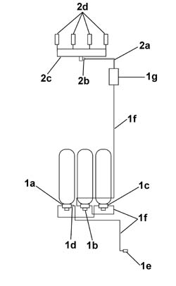

1042A06 C.N.G. - FUEL SYSTEM CHECK FOR ANY LEAKS USING ELECTRONIC DETECTOR FOLLOWING OPERATIONS
- Path
- Procedures > 10 ENGINE UNIT > 1042 METHANE GAS CANNISTER AND TUBES > 1042A METHANE GAS CANNISTER AND TUBES FOR RE-CHARGING > 1042A06 C.N.G. - FUEL SYSTEM CHECK FOR ANY LEAKS USING ELECTRONIC DETECTOR FOLLOWING OPERATIONS
- Kind
- repair procedure (removal / refitting; the operation number is the code)
- Applies to
- engines: 1.6 16v; production: da 06/04; only with equipment: BIPOWER
- Interactive page
- https://sloeber94.github.io/elrnDB-fMltpl/en/#/186007233
Applies to: engines: 1.6 16v; production: da 06/04; only with equipment: BIPOWER
fter any service operation or replacement that involved the seal fittings or the movement of pressurised parts, test for methane gas (CNG) leaks as follows:
Carry out a road test by driving for 5-10 km in methane operating mode.
Return the vehicle to the workshop and place on a lift.
The test should be conducted where there are no sudden variations in temperature.
Close the manual valves on the methane cylinders in order to exclude them from the circuit.
Connect the Examiner to the methane control unit and select the "Parameters" ambient to read the high pressure value
Wait for 3 minutes and take another reading of the gas pressure. The final pressure reading should not differ from the initial reading (0 -1 bar).
If it differs from the initial value, continue the test for a further 3 minutes.
1. If the pressure continues to drop, use an electronic tester (GAS DETECTOR L.P.G. - CNG - by GIGATRON or similar device) to detect any gas leaks. Check each component and each individual pipe in the CNG system: cut-off solenoid on the cylinder complete with manual cut-off valve (1a, 1b and 1c), single-acting valve (1d), repressurising union complete with check valve and safety plug (1e), steel pipes (1f), pressure reducer copmlete with pressure sensor and cut-off solenoid (1g).
Localise the leaking system section using the electronic detector and then spread the components with a leak detection foam (manufactured by BRC - code 90AV99000052 or similar product) to identify the exact point of the leak.
Check the part to find the cause of the leak (loose fittings, failure to replace sealing rings, defective part) and then carry out the repair.
Repeat the procedure to check for leaks until the problem is completely resolved
2. Proceed to check the circuit and the low pressure pipes with the circuit pressurized: hose (2a), pressure/temperature sensor (2b), methane fuel manifold (2c) and methane injectors (2d).
Identify the leaking system section using an electronic detector as described previously and take the necessary corrective action (tighten fittings, replace sealing rings or replace the part).
Repeat the procedure to check for leaks until the problem is completely resolved

Topics that link to this page (17)
- 1040B32 FUEL FILLER PIPE UNION SLEEVE - R + R
- 1042A16 CNG CYLINDER UNIT - R R
- 1042A20 INJECTION SYSTEM SOLENOID ON CYLINDER R R
- 1042A24 CNG INJECTION SYSTEM ONE-WAY VALVE - R R
- 1042A43 CNG REPRESSURIZING PIPE FROM REPRESSURIZING VALVE TO SINGLE-ACTING VALVE - R.R.
- 1042A50 PIPE (1) CONNECTING CNG RECHARGING SYSTEM SOLENOIDS - R R
- 1042A70 LEFT CYLINDER OF CNG CYLINDER UNIT R R
- 1042A72 CENTRAL CYLINDER OF CNG CYLINDER UNIT R R
- 1042A74 RIGHT CYLINDER OF CNG CYLINDER UNIT R R
- 1042B10 CNG SUPPLY LINE FROM SOLENOID TO PRESSURE REDUCTION UNIT - R R
- 1044E10 CNG INJECTION SYSTEM PRESSURE REDUCTION UNIT - R R
- 1044E12 GAS PRESSURE CONTROL VALVE ON GAS CIRCUIT - REPLACE
- 1044E15 SOLENOID VALVE COIL ON CNG INJECTION SYSTEM' PRESSURE REDUCTION UNIT - R.R.
- 1044E20 CNG INJECTION SYSTEM PRESSURE REDUCTION UNIT MOUNTING BRACKET - R.R.
- 1058A44 CNG/FUEL SWITCH - R R
- 1058A46 CNG PRESSURE/TEMPERATURE SENSOR ON SINGLE MANIFOLD PIPE - R.R.
- 1058A60 SINGLE CNG MANIFOLD PIPE COMPLETE WITH INJECTORS - R R